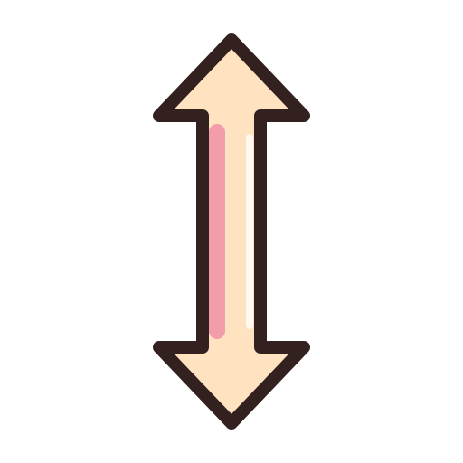
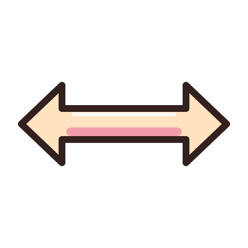
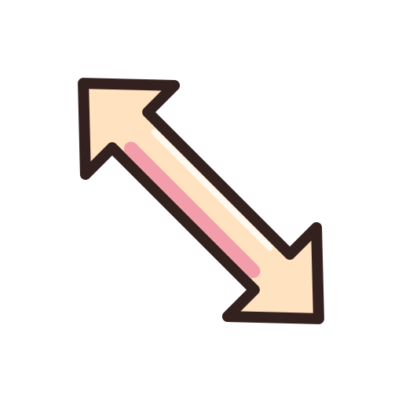
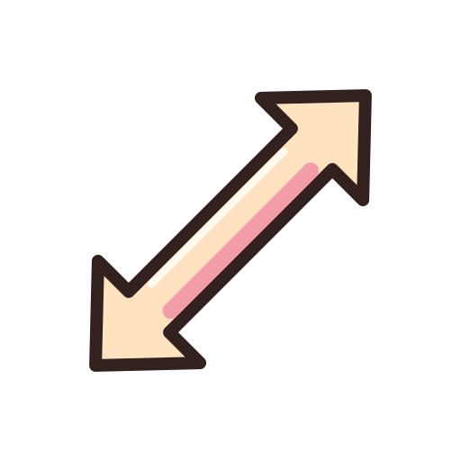

Redimensionamento na verticalSetas verticais; ponto de clique central.09-redimensionamento-vertical.cur
Redimensionamento na horizontalSetas horizontais; ponto de clique central.10-redimensionamento-horizontal.cur
Redimensionamento na diagonal 1Diagonal superior esquerda / inferior direita.11-redimensionamento-diagonal-1.cur
Redimensionamento na diagonal 2Diagonal superior direita / inferior esquerda.12-redimensionamento-diagonal-2.cur